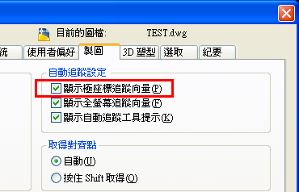
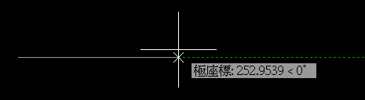
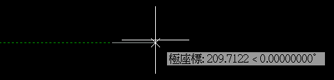

平時習慣使用「F10」極座標模式，依系統預設都有開啟「極座標追蹤向量」。

之前有發現一個問題，一般當您畫線（LINE）的時候，「極座標追蹤向量」顯示會跟你畫的方向一樣。舉例：畫線第二點往右方 0 度移動，此時「極座標追蹤向量」綠色虛線會往右方 0 度無限延伸（如圖所示）。

但是有一張圖檔很怪，他的「極座標追蹤向量」綠色虛線卻是相反的往左方 180 度（如圖所示）。這個問題只存在某個圖檔，其他圖檔皆正常～

這個問題後來解決了，解法在論壇原文的討論中：https://www.autocad-tw.com/t11220-topic